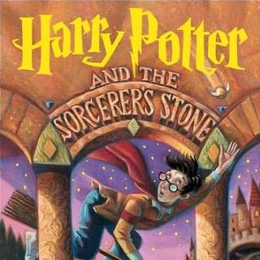
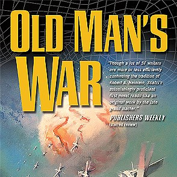
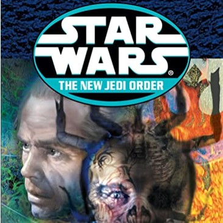

Assignment 5.2: Build a Web Page Exercise - Part 4
Harry Potter and the Sorcerer's Stone

Author: J. K. Rowling
Old Man's War

Author: John Scalzi
The New Jedi Order: Vector Prime

Author: R. A. Salvatore
Back to Landing Page